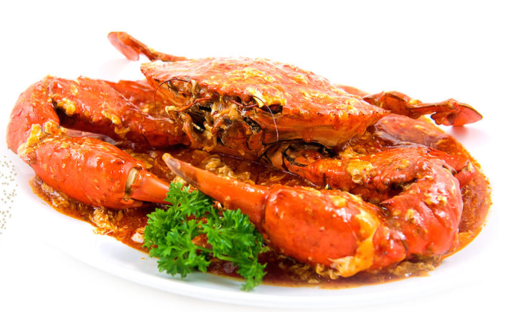

Chilli Crab

Description
You can't visit Singapore without rolling up your sleeves and diving into a plate of
iconic chili crab, Singapore's unofficial national dish. Crabs are served in a huge
puddle of tomato sauce that's sweet, spicy, tangy, and often thickened with egg.
Though the shells have been pre-smashed, you've got to dig in and use whatever tool
you can find, like chopsticks or fingers (tiny forks are not handed out here) to suck
out every morsel of succulent, sweet crab. Bibs? I've never seen one. This is not a first
date kind of a dish.
Chili crab was created in Singapore in the 1950s by Cher Yam Tian. After experimenting in
her kitchen for family and friends, her crabs became a hit, and her family opened their
first restaurant, Palm Beach Seafood. Since then, the dish has become a staple on menus
across Singapore, from hawker centers to fancy restaurants.
Ingredients
- 1 tablespoon (8g) cornstarch
- 2 tablespoons (30g) water
- 7 tablespoons (104ml) peanut oil
- 2 to 3 whole shallots, minced (about 1/2 cup)
- 1 1/2-inch knob ginger, grated (about 2 tablespoons)
- 6 medium garlic cloves, minced (about 2 tablespoons)
- 4 Thai chiles, minced
- 2 whole Mud or Dungeness crabs (about 1 pound each)
- 2 cups (500ml) homemade or store-bought low sodium chicken broth
- 1/4 cup (66g) tomato paste
- 1/2 cup (125ml) hot-sweet chili sauce
- 1 large egg, beaten
- 1/2 cup thinly sliced green onions
- 1 cup fresh cilantro leaves
Steps
- In small bowl, whisk cornstarch with 2 tablespoons water; set aside. In large wok with lid (or Dutch oven), heat oil over medium heat until shimmering. Stir in shallots, ginger, garlic, and chiles. Cook and stir until fragrant, about 1 minute.
- Add crab pieces and broth. Increase heat to medium high and bring to a boil. Cover loosely and gently boil (decrease heat if necessary), until crab has turned red and is nearly cooked through, about 6 minutes.
- Remove cover and stir in tomato paste and chili sauce. Simmer 1 minute and season to taste with salt, sugar, or chili sauce. Stir in cornstarch mixture and bring to a boil to thicken.
- Remove from heat and whisk in egg. Stir in green onions. Ladle into serving dish, sprinkle with cilantro and serve.